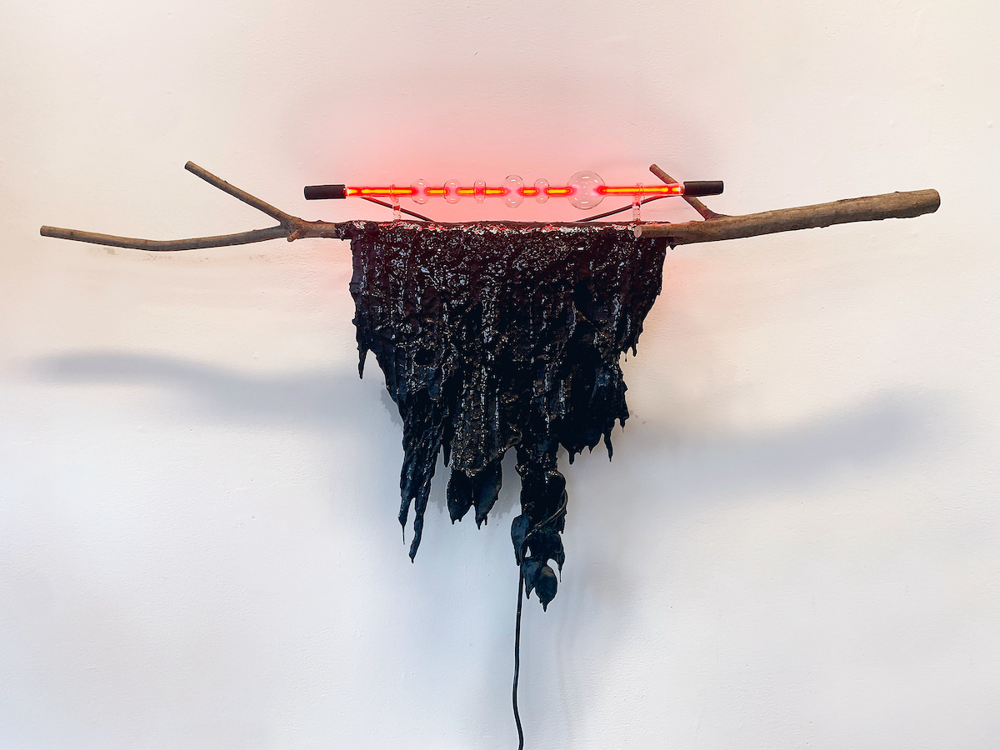
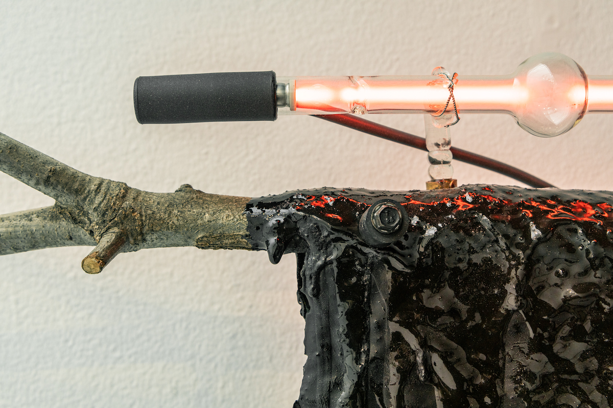
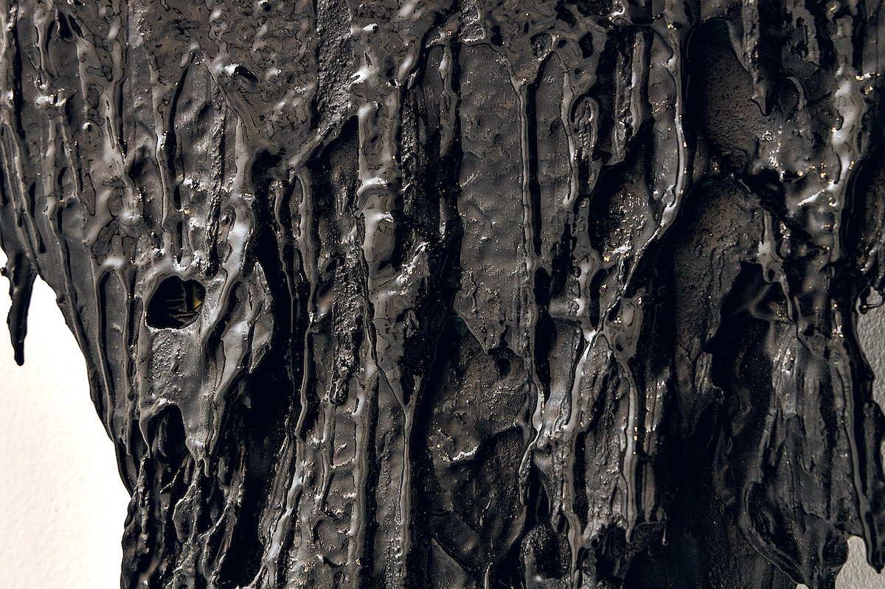

oak branch, neon tube, transformer, various viscous substances.
40”x35”x7”
2020
A layering of paint, organic material repeatedly dipped in driveway sealant, and different glues is draped over a cleanly cut branch from an oak tree and hung on the wall. The neon tube (made on a glass lathe) illuminates the glossy, sticky appearance of the sludge.